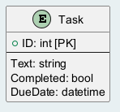

5. データモデル
5.1 データベース構造
データベースの構造を説明します。このアプリケーションのデータベースは以下のように定義されています:
CREATE DATABASE task_db;
USE task_db;
CREATE TABLE tasks (
id INT AUTO_INCREMENT PRIMARY KEY,
text VARCHAR(255) NOT NULL,
completed BOOLEAN DEFAULT FALSE,
dueDate DATETIME NOT NULL
);
ALTER TABLE tasks CONVERT TO CHARACTER SET utf8mb4 COLLATE utf8mb4_unicode_ci;このデータベース構造により、タスク管理アプリケーションで使用されるタスクデータが格納されます。各タスクには以下の項目が含まれます:
-
id: 一意の識別子（自動増分、主キー）
-
text: タスクの内容
-
completed: タスクの完了状態（デフォルトは FALSE）
-
dueDate: タスクの期限日
5.2 ER 図
エンティティとリレーションの図を示します。
